Controle Sem Fio Xbox One (Posse de Rafael Lovizetto)
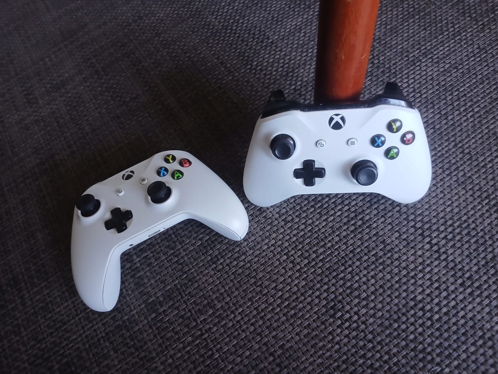
Controle Sem Fio Xbox One
O Controle Sem Fio Xbox One é o controle desenvolvido
pela Microsoft para a família Xbox One, lançada em
2013. Ele representa uma evolução direta do controle
utilizado no Xbox 360, mantendo a disposição geral
dos comandos, mas recebendo alterações na ergonomia,
nos gatilhos, no sistema de vibração, na conectividade
e na construção interna.
O controle possui dois analógicos, um direcional
digital, quatro botões frontais, dois bumpers,
dois gatilhos analógicos, botões View, Menu e Xbox,
além de motores de vibração e comunicação sem fio.
Ao longo da geração Xbox One foram produzidas várias
revisões do controle. Algumas modificaram a carcaça,
outras introduziram entrada de headset de 3,5 mm,
alterações na textura e mudanças internas.
Contexto Histórico
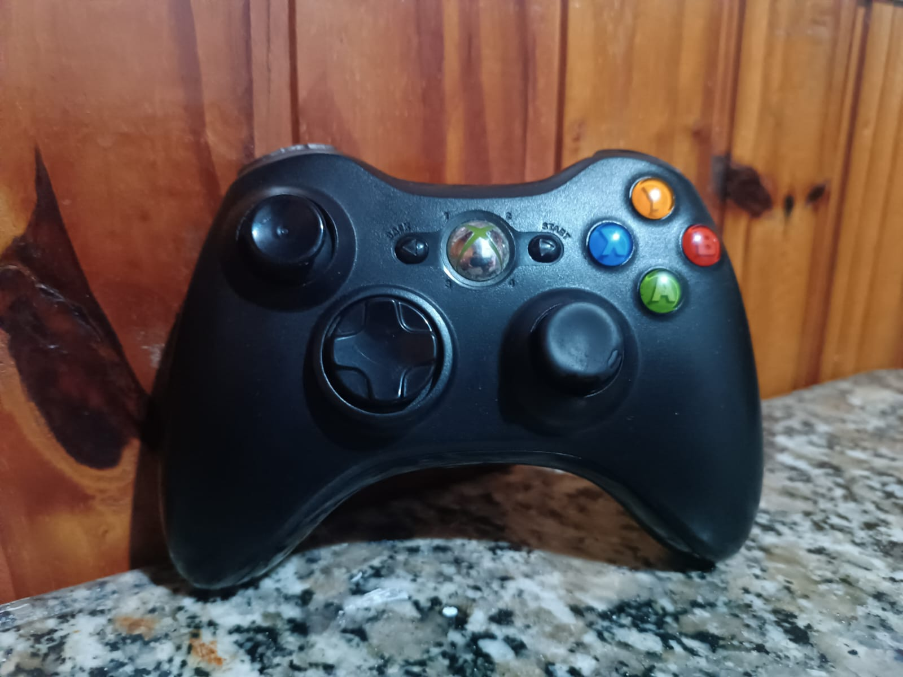
O controle do Xbox One possui uma relação direta
com o controle do Xbox 360. A Microsoft preservou
a posição dos principais comandos, facilitando a
transição entre as duas gerações.
Entretanto, praticamente toda a estrutura foi
revisada. Os gatilhos receberam sistemas próprios
de vibração, os analógicos foram modificados,
o direcional foi redesenhado e a carcaça recebeu
uma nova ergonomia.
O resultado foi um controle que visualmente lembra
seu antecessor, mas apresenta diversas diferenças
internas.
Alimentação
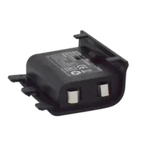
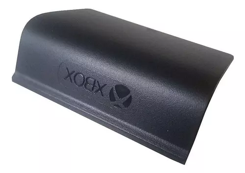
O controle utiliza tradicionalmente duas pilhas AA,
instaladas em um compartimento localizado na parte
traseira.
A alimentação das pilhas é encaminhada através de
contatos metálicos para o circuito eletrônico,
onde é utilizada para alimentar o microcontrolador,
comunicação sem fio, sensores, LEDs e motores.
Também existem acessórios de bateria recarregável
produzidos para o controle, permitindo substituir
as pilhas descartáveis por uma bateria compatível.
Conectividade
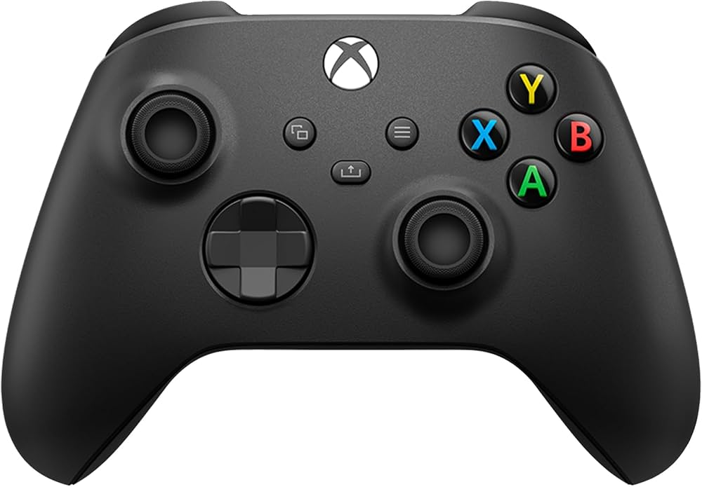
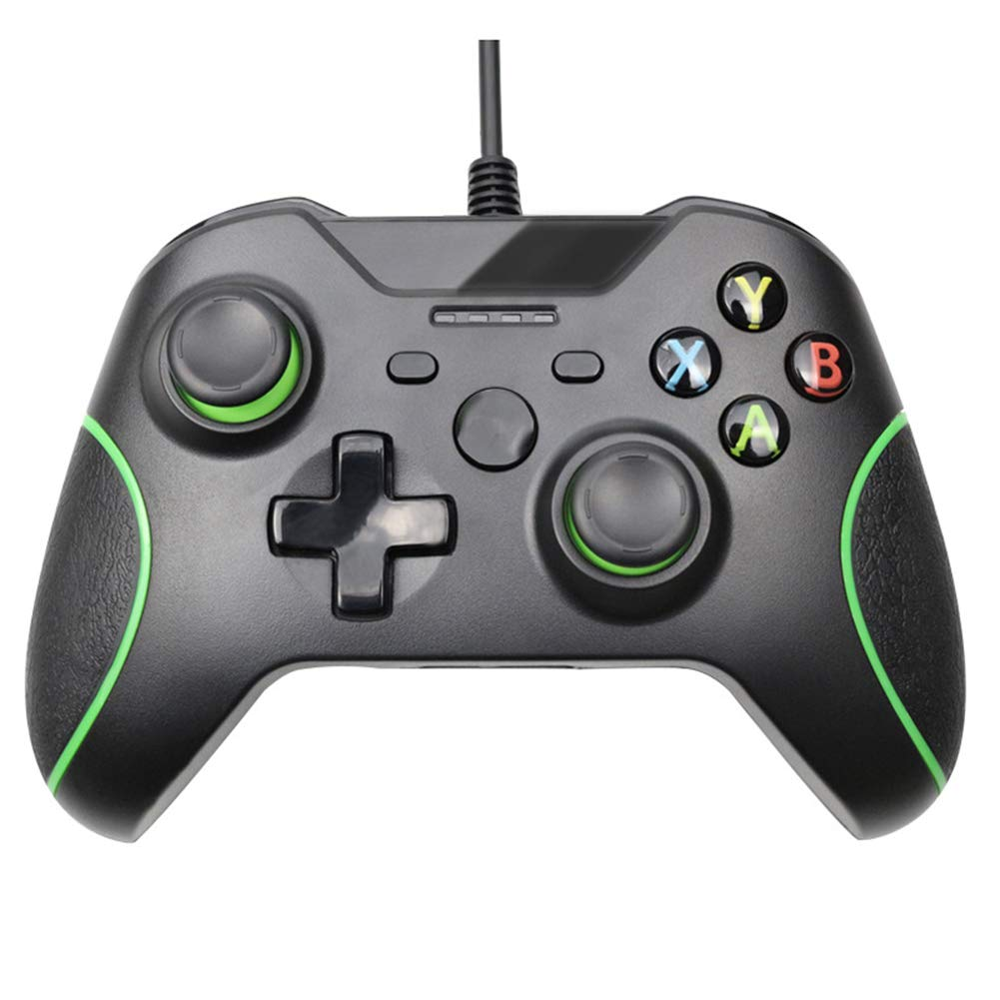
A comunicação sem fio é uma das principais características
do controle. O sistema permite que os comandos sejam
enviados ao console sem a necessidade de um cabo entre
os dois dispositivos.
O controle também possui conexão USB em suas revisões,
permitindo comunicação por cabo com equipamentos
compatíveis.
Algumas revisões posteriores passaram a possuir uma
entrada de áudio de 3,5 mm diretamente no controle,
eliminando a necessidade de determinados adaptadores
utilizados nas primeiras versões.
Sistema de Controles
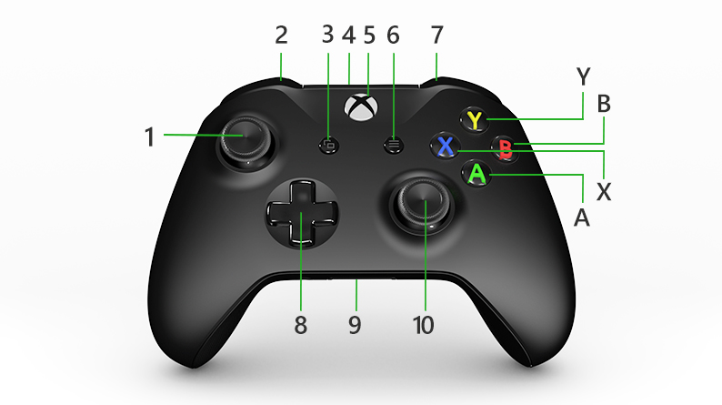
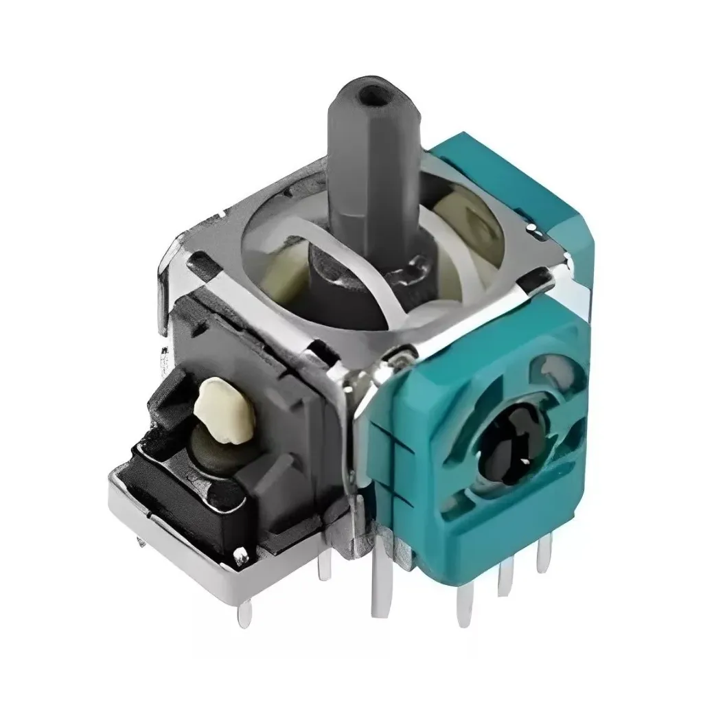
O controle possui dois sticks analógicos,
um direcional digital, quatro botões frontais,
dois bumpers e dois gatilhos.
O conjunto também inclui os botões View, Menu
e Xbox. Os analógicos podem ser pressionados,
fornecendo entradas adicionais chamadas de
L3 e R3 em determinadas nomenclaturas utilizadas
pelos jogos.
A combinação desses comandos permite que o controle
seja utilizado para jogos de diversos gêneros.
Sistema de Vibração
O controle possui motores responsáveis pelo feedback
vibratório. Além dos motores localizados no corpo
principal, existem motores associados aos gatilhos
nas implementações que utilizam o sistema conhecido
como Impulse Triggers.
Isso permite que o jogo produza diferentes tipos
de resposta física, como vibração geral do controle
ou vibração localizada nos gatilhos.
Modelos e Variações
Durante a geração Xbox One, o controle recebeu
diversas revisões. Além das alterações técnicas,
a Microsoft lançou versões em várias cores e
edições especiais associadas a diferentes jogos
e produtos Xbox.
A estrutura básica permaneceu semelhante, porém
existem diferenças entre as revisões, principalmente
relacionadas à textura da carcaça, conectividade,
entrada para headset e componentes internos.

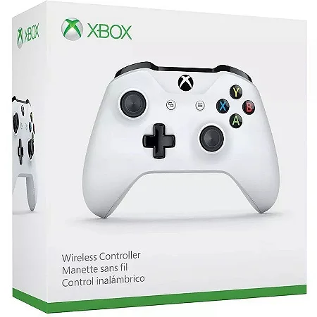
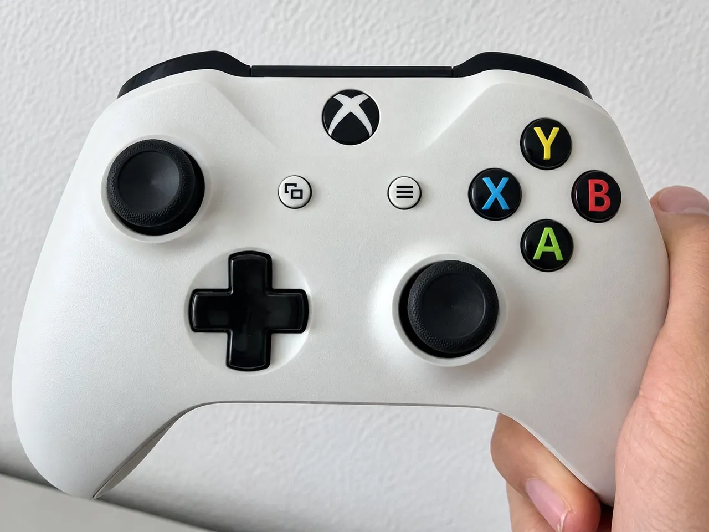
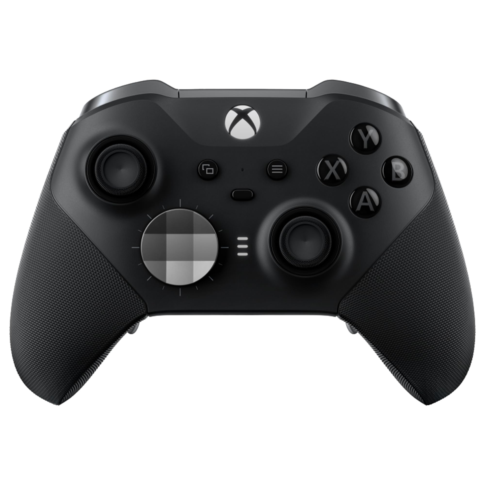